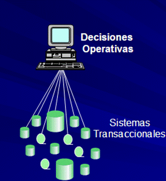

Las bases de datos son lugares diseñados para almacenar grandes cantidades de datos de forma sistematizada con el fin de que podamos acceder a ellos de forma rápida y eficiente.
En la actualidad todo se maneja con bases de datos y estas están cobrando mayor relevancia en un mundo altamente digitalizado en donde las empresas ponen su dinero en toneladas de datos como nuevo mecanismo de inversión. Desde luego, existen distintos tipos de bases de datos.
Según el uso que le vayamos a dar debemos elegir la más apropiada. Hoy te hablaremos de una que se ha convertido en pieza clave para las empresas y las organizaciones. Conozcamos las características de las bases de datos transaccionales.
Los datos de transacción es información que se captura de las transacciones. Registran la hora de la transacción, el lugar donde se realizó, los puntos de precio de los artículos comprados, el método de pago empleado, los descuentos si los hubiere y otras cantidades y cualidades asociadas con la transacción. Los datos de transacción generalmente se capturan en el punto de venta.

En otras palabras, los datos de transacción son datos generados por varias aplicaciones mientras ejecutan o respaldan los procesos comerciales cotidianos de compra y venta. Existe una red grande y compleja de servidores de puntos de venta, software de seguridad, cajeros automáticos y datos de pasarelas de pago, que se originan en todos los dispositivos posibles utilizados para completar una transacción financiera.
Desde el punto de vista del proceso, a cada transacción realizada se le asigna su propio identificador único, conocido como "ID de transacción", que va acompañado de una lista de elementos que forman parte de dicha transacción.
Los datos de transacción difieren de las otras categorías principales de datos, que son:
Ventajas
Una de las principales ventajas de las bases de datos transaccionales es que permiten asegurar la integridad de los datos (puesto que están diseñadas con propiedades ACID), además, se puede modificar la información sin poner en riesgo dicha integridad.
Son rápidas y operan con muy baja latencia, permitiendo replicar datos o recuperarlos de los almacenes en muy poco tiempo, lo que facilita llevar a cabo operaciones de monitoreo en tiempo real. Además, reducen al máximo el riesgo de pérdida de datos por fallos en el sistema.
Desventajas
La principal desventaja de las bases de datos transaccionales es la limitación que tienen para generar informes, puesto que, como ya hemos mencionado, permiten realizar consultas simples para obtener una radiografía de los procesos del negocio, especialmente de los de producción. Por lo tanto, necesitan trabajar de manera asociada a una base de datos relacional o bases de datos multidimensionales para poder sacarles mayor partido (por definición, las bases de datos multidimensionales están creadas usando entradas de las bases de datos relacionales existentes).
Además, el historial de datos que facilitan a través de su consulta está limitado a datos actuales o recientes.
Beneficios
Aseguran la integridad de los datos
Las bases de datos transaccionales están diseñadas para ser compatibles con ACID, lo que permite que la base de datos pueda mantener un alto nivel de integridad de los datos que se incluyen en ella. Esto es de vital importancia sobre todo en las transacciones bancarias y comerciales.
Para los que desconocen el término ACID, es un conjunto de propiedades que describe cómo se diseñan las bases de datos transaccionales para preservar la integridad de la escritura en la base de datos.
Baja latencia
Debido a que las bases de datos transaccionales están diseñadas para ejecutar sistemas de producción, son muy buenas en operaciones que deben completarse en milisegundos. En pocas palabras, son increíblemente rápidas.
Monitoreo de sistemas operativos
Si estás tratando de monitorear las cargas de trabajo de soporte o el inventario u otro sistema operativo y necesitas tomar decisiones basadas en datos recientes, replicar la base de datos de producción puede ser la mejor opción.
Y las bases de datos transaccionales pueden realizar esta réplica de forma casi instantánea en tiempo real.